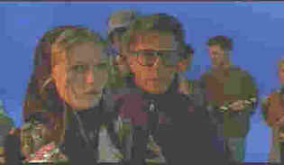

|
Wag the Dog/A-,A |
|
New Line/1997/96m/ANA,WS1.85,FS 1.33AAA |
An American president is accused of sexual improprieties in The White House less than two weeks
before the election. Bring on the spin doctor, the political fixer who can turn the proverbial
sow's ear into a silk purse, the only guy with the ruthless political savvy to Wag the Dog.
Strategist Connie Brean decides the only thing to save the President's re-election is to divert
attention from the accusations; and what better way than creating a war. Yes, creating. Bring on
producer Stanley Moss. If Moss is good enough to produce the Academy Awards, than Brean reasons he
can produce the necessary war.
You've got to hand it to Barry Levinson. Working from a screenplay by
Hilary Henken and David Mamet, the director moves Wag the Dog along like a sailboat gliding
across a perfect horizon. Effortlessly mixing hilarious moments with faint touches of gravity,
Levinson's movie dances along the high wire of topicality and broad satire. When does satire
approach reality? There were times I was laughing so hard, I know I missed some additional funny
lines. There were other moments when the possibilities of political abuse were all too frightening.
 |
|
Moss manufactures war.©New Line
|
Dustin Hoffman's forever optimistic movie producer Stanley Moss is
an ebullient character. Moss compares every obstacle to a past movie obstacle overcome. Once he
joins the team, the film takes off in turbo mode. Connie Brean is a terrific role for Robert De
Niro, one in which he disappears convincingly, creating an effortless portrait with consummate
professional elan. The free spirited circumstances of Wag the Dog is a fertile creative
ground and under Levinson's knowing direction, the actors all flourish. Add the interesting angles
from which cinematographer Robert Richardson records the proceedings and the knowing score from
Mark Knopfler and Wag the Dog is a completely delightful experience.
This splendid anamorphic DVD has incredible film-like images. Absolutely
consistent in its display of detail under all lighting conditions, the colors on Wag the Dog
are alive and natural. Hoffman's bronzed tan is perfectly balanced with the chalk white indoor
complexion of Ann Heche. The music fares very well in this mix. During the recording session, with
Hoffman blithely shadow conducting behind the glass, the location and varied tones of the choral
singers comes across with excellent airiness and comfortable dynamics. The DVD package is chuck
full of extras including a featurette with interviews commenting on the politics of political
satire, the theatrical trailer, bios, an essay on politics and the media, and an enjoyable audio
commentary by Barry Levinson and Dustin Hoffman. Wag the Dog is definitely archive material.
|
|

Selections from the feature archive include articles on Akira
Kurosawa, Frank Darabont,
Blonde
Bimbos, Hollywood Street Gangs,
or Vietnam:
The Hollywood Pariah, and many more....
Vietnam:
The Hollywood Pariah

During World War II, Hollywood pumped out war movies one after the other. Vietnam was was another
story. As far as Hollywood was concerned it was a pariah.


The National Film Preservation Foundation (NFPF) is the nonprofit organization created by the U.S. Congress to save
America's film heritage.
Imaging Science Foundation
The Imaging Science Foundation promotes proper standards in home theater viewing. ISF trained
technicians offer monitor calibration services to consumers. The difference in a properly
calibrated monitor can be astounding. Click on the image to find an ISF member near you.

The
Movie Poster Archive includes extensive poster images from the films of stars like Susan Hayward,
Kirk Douglas, Katharine Hepburn and many more. Our featured star is Lana Turner.
|